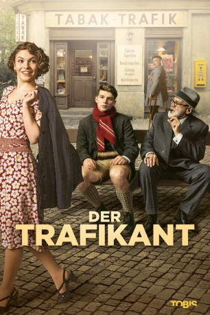

#10961 Der Trafikant
 
 IMDB-Wertung: 6.5 / 10
IMDB-Wertung: 6.5 / 10  Metascore: 0
Metascore: 0 
Wien 1937/38. Franz, 17, ist Lehrling in einer Trafik, so nennt man in Österreich einen kleinen Zeitungs- und Zigarrenladen. Hier lernt er das Leben kennen – und die Liebe. Gut, dass er dazu einen Stammkunden und Experten zu Rate ziehen kann: Sigmund Freud, 82. Dem allerdings ist das weibliche Geschlecht ein kaum minder großes Rätsel. Franz, sein neuer Freund Freud, die junge böhmische Varietétänzerin Anezka, in die Franz unglücklich verliebt ist, und der couragierte Trafikbesitzer Otto geraten in den Strudel der sich dramatisch zuspitzenden politisch-gesellschaftlichen Ereignisse.
Jahr: 2018
Dauer: 113 Minuten
FSK: 12
Land: Österreich Studio: Tobis FilmTonspuren:
Untertitel:
Auflösung: 1080p (1920x808) Größe: 4392 MB
Genre: Drama
Regisseur: Nikolaus Leytner
Drehbuch: Klaus Richter, Nikolaus Leytner, Robert Seethaler
Soundtrack: Matthias Weber
Darsteller:
- Simon Morzé als Franz Huchel
 Bruno Ganz als Prof. Sigmund Freud
Bruno Ganz als Prof. Sigmund Freud Johannes Krisch als Otto Trsnjek
Johannes Krisch als Otto Trsnjek- Emma Drogunova als Anezka
- David Altman als Truck driver
 Karoline Eichhorn als Anna Freud
Karoline Eichhorn als Anna Freud- Regina Fritsch als Margarete Huchel
- Tom Hanslmaier als Offizier
- Thomas Mraz als Conferencier
- Vicky Nikolaevskaja als Freundin
- Christoph Bittenauer als Jahrmarktausrufer
- Gerti Drassl als
- Michael Fitz als Roter Egon
- Erni Mangold als Frau im Pelzmantel im Bahnhof
- Tobias Ofenbauer als Kapitän
- Robert Seethaler als
- Angelika Strahser als
- Rainer Wöss als
Datei: X:\2018(N-Z)\Trafikant, Der (2018, FSK12, 1920x808).mkv seit 11.04.2019
Festplatte: HD 2018(G-Z)-2019(A-Z)
 Es gibt insgesamt 172 Filme in der Gruppe '2018(N-Z)'
Es gibt insgesamt 172 Filme in der Gruppe '2018(N-Z)'